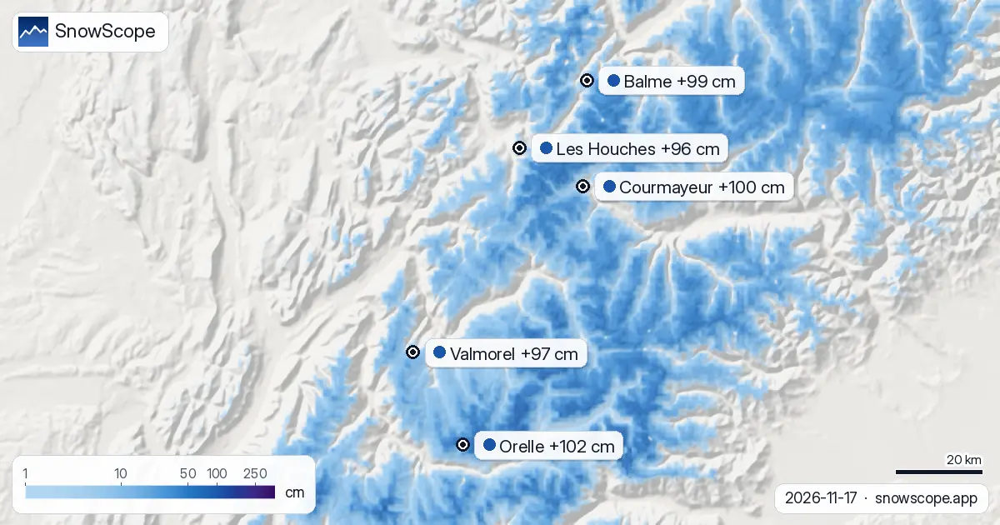

Orelle suit la trajectoire normale de 42 cm avec l'arrivée de la neige en novembre
Orelle affiche 42 cm aujourd'hui, en retrait par rapport à la profondeur normale pour cette période de l'année. Au cours des 72 prochaines heures, les Alpes se rempliront de neige fraîche avec l'arrivée d'une perturbation, et Orelle devrait accumuler 102 cm sur ses pentes supérieures.
Consultez les prévisions neige en temps réel pour Orelle sur l'application SnowScopeHauteurs de neige, alertes poudreuse et carte 3D, gratuitement.Où nous en sommes
Orelle enregistre 42 cm mesurés à 2 780 m. Pour la mi-novembre, la profondeur typique ici est de 53 cm, nous sommes donc en retard d'environ 20 pour cent par rapport à la moyenne à long terme. Il y a une semaine, le manteau neigeux était beaucoup moins épais avec seulement 14 cm, la montagne s'est donc constitué régulièrement. C'est encore de la neige de début de saison, fine et clairsemée par endroits, donc les rochers et les obstacles du terrain restent proches de la surface sur de nombreuses pentes.
L'eau stockée dans le manteau neigeux à Orelle en ce moment est modeste selon les normes hivernales. La neige de novembre est souvent légère et poudreuse parce que l'air froid ne s'est pas encore installé profondément, donc la densité est faible. À l'approche de décembre et avec la baisse des températures, la même quantité de précipitations compressera le manteau neigeux plus efficacement et stockera plus d'eau en montagne.
| # | Station | Région | +24 h | +72 h | Limite pluie-neige |
|---|---|---|---|---|---|
| 1 | Orelle | Alpes · France | 22 cm | 102 cm | 2 500 m |
| 2 | Courmayeur | Alpes · Italie | 28 cm | 100 cm | 2 000 m |
| 3 | Balme | Alpes · France / Suisse | 20 cm | 99 cm | 2 000 m |
| 4 | Valmorel | Alpes · France | 18 cm | 97 cm | 2 100 m |
| 5 | Les Houches | Alpes · France | 25 cm | 96 cm | 2 000 m |
| 6 | Arêches Beaufort | Alpes · France | 23 cm | 96 cm | 2 100 m |
| 7 | Evasion Mont Blanc | Alpes · France | 23 cm | 93 cm | 2 100 m |
| 8 | Les Arcs | Alpes · France | 22 cm | 92 cm | 2 100 m |
| # | Station | Région | +24 h | +72 h | Limite pluie-neige |
|---|---|---|---|---|---|
| 1 | China Peak | Ouest américain · États-Unis | 3 in (7 cm) | 35 in (88 cm) | 6 600 ft (2 000 m) |
| 2 | Mammoth Mountain | Ouest américain · États-Unis | 4 in (9 cm) | 31 in (80 cm) | 6 600 ft (2 000 m) |
| 3 | June Mountain | Ouest américain · États-Unis | 4 in (10 cm) | 31 in (78 cm) | 6 900 ft (2 100 m) |
| 4 | Kingvale | Ouest américain · États-Unis | 8 in (21 cm) | 30 in (77 cm) | – |
| 5 | Badger Pass | Ouest américain · États-Unis | 5 in (12 cm) | 30 in (77 cm) | 5 900 ft (1 800 m) |
| 6 | Boreal | Ouest américain · États-Unis | 8 in (20 cm) | 30 in (75 cm) | 5 200 ft (1 600 m) |
| 7 | Kirkwood | Ouest américain · États-Unis | 7 in (19 cm) | 30 in (75 cm) | 6 200 ft (1 900 m) |
| 8 | Palisades Tahoe Alpine Meadows | Ouest américain · États-Unis | 7 in (19 cm) | 29 in (73 cm) | 5 200 ft (1 600 m) |
| # | Station | Région | +24 h | +72 h | Limite pluie-neige |
|---|---|---|---|---|---|
| 1 | Fortress | Ouest canadien · Canada | 6 cm | 6 cm | 1 400 m |
| 2 | Nakiska | Ouest canadien · Canada | 6 cm | 6 cm | 1 500 m |
| 3 | WinSport (Canada Olympic Park) | Ouest canadien · Canada | 6 cm | 6 cm | 800 m |
| 4 | Castle | Ouest canadien · Canada | 5 cm | 6 cm | 1 200 m |
| 5 | Pass Powderkeg ski | Ouest canadien · Canada | 5 cm | 6 cm | 1 100 m |
| 6 | Banff Sunshine Village | Ouest canadien · Canada | 4 cm | 4 cm | 1 400 m |
| 7 | Mt Norquay | Ouest canadien · Canada | 4 cm | 4 cm | 1 400 m |
| 8 | Wapiti | Ouest canadien · Canada | 3 cm | 4 cm | 1 400 m |

Les prévisions comblent l'écart
Au cours des 24 prochaines heures, 22 cm de neige fraîche sont prévus sur les pentes supérieures d'Orelle. Dans les 72 heures, ce total monte à 102 cm. C'est un gain important par n'importe quelle mesure, et il arrive à un moment où le manteau neigeux est plus mince que d'habitude. La limite de neige restera autour de 2 500 m, ce qui signifie que les pentes au-dessus de cette altitude bénéficieront le plus.
Sur les Alpes, l'accumulation la plus importante affectera les stations exposées aux vents du nord-ouest et les pentes orientées à l'ouest où la masse d'air sera forcée vers le haut. Courmayeur en Italie enregistre la prévision la plus agressive parmi les grandes stations, avec 28 cm le jour suivant et 100 cm en 72 heures. Les systèmes alimentant ces chutes de neige apporteront l'humidité de l'Atlantique et de la Méditerranée, typique des régimes météorologiques de novembre qui s'établissent une fois la saison commencée.

Trois jours qui transforment la saison
Si cette prévision se vérifie, le manteau neigeux à Orelle plus que doublera. Cela transforme la montagne d'une couverture marginale de début de saison à une base sur laquelle les skieurs peuvent compter. Le gain de 102 cm en 72 heures n'est pas inhabituel pour un système alpin puissant en novembre, mais il arrive au moment où le manteau existant est fin, le gain en pourcentage est donc frappant.
Balme, Les Houches, Arêches Beaufort et Évasion Mont Blanc connaîtront tous des chutes similaires importantes, chacune prévue d'accumuler entre 93 et 99 cm. Les Alpes occidentales, où les systèmes entrent en premier, se rempliront plus vite que les vallées centrales. Dès la fin mercredi, le caractère de la saison sera passé du début de saison à des conditions véritablement skiables en haute montagne.
L'eau dans le système
D'un point de vue hydrologique, 100 cm de neige en novembre représente une recharge importante du réservoir alpin. Aux densités typiques de novembre, 102 cm stockeront environ 25 à 30 mm d'équivalent en eau. Cette eau est verrouillée aux sommets élevés maintenant, isolant les prises d'eau du réservoir plus bas et alimentant la fonte printanière qui alimente les rivières et les villes pendant l'été.
L'incertitude de mesure dans une prévision de cette ampleur est réelle. Le désaccord entre les modèles est généralement le plus petit trois jours à l'avance, mais les systèmes météorologiques peuvent encore changer de vitesse ou d'intensité. La prévision de la limite de neige à 2 500 m suggère que les vallées basses peuvent voir de la pluie mélangée, donc la zone de transition sera un seuil entre mouillé et blanc. Consultez les bulletins d'avalanches locaux avant de partir hors-piste, car le chargement rapide sur les pentes raides augmente le danger même si la base dessous est ancienne et stable.
Au-delà des Alpes
En Amérique du Nord, le tableau est plus sec. China Peak dans la Sierra Nevada de Californie devance le continent avec 88 cm prévus en 72 heures, mais les conditions sont modestes comparées à l'Europe. Mammoth Mountain et June Mountain verront respectivement 80 et 78 cm. La limite de neige se situe plus haut sur l'Ouest américain, autour de 2 000 m, limitant le terrain qui en bénéficie. Kingvale captera le plus d'humidité à court terme avec 21 cm en 24 heures.
Le Canada occidental est privé de neige. Fortress et Nakiska enregistrent chacun 6 cm pour les 72 prochaines heures, avec peu de précipitations organisées attendues. Banff Sunshine Village prévoit seulement 4 cm, et même les sites les plus humides gagneront à peine plus qu'une trace. Les prairies et les montagnes du Canada occidental ne sont pas sur le chemin de ce système ; ils devront attendre l'arrivée d'une météo différente.
Ce qu'il faut surveiller
Suivez le timing des chutes de neige sur les Alpes. Si des bandes plus importantes se déplacent à travers Orelle mardi plutôt que mercredi, les pentes supérieures se chargeront rapidement et le risque d'avalanche pourrait augmenter. Le bulletin officiel d'avalanche pour votre région est une lecture essentielle avant tout voyage hors-piste.
Dès jeudi matin, le manteau neigeux à Orelle sera transformé. La question passe ensuite de la profondeur à la stabilité : à quel point la neige nouvelle se lie-t-elle à la base de novembre en dessous ? Cette réponse façonnera les lignes les plus sûres pour les jours à venir. Utilisez SnowScope pour suivre comment les montagnes se remplissent et trouvez quelles stations accumuler le plus d'eau et de profondeur en temps réel.
Conseils aux skieurs
- Restez sur les pistes balisées mardi et mercredi tandis que la neige fraîche charge les pentes supérieures. Attendez que les conditions se stabilisent avant d'explorer le terrain plus raide hors-piste.
- La limite de neige à 2 500 m à Orelle signifie que la meilleure couverture sera au-dessus de cette altitude. Les pentes basses peuvent encore montrer des plaques de terrain, en particulier sur les aspects orientés au sud.
- Dès jeudi, 102 cm de neige nouvelle créeront des conditions rapides et potentiellement lourdes. Utilisez une pelle pour tester la liaison entre la neige nouvelle et l'ancienne avant de vous engager sur des lignes raides.
- Consultez le bulletin officiel d'avalanche de votre région avant de quitter la station. Le chargement de début de saison sur une base fine peut déclencher des plaques même sur des pentes qui semblent stables.
À propos de ces chiffres
Les hauteurs de neige des stations sont la neige la plus épaisse sur le haut du domaine, d'après le modèle de neige SnowScope (environ 1 km, calcul du 16 novembre) ; ce sont des estimations pour une zone, pas une mesure en un point. Les valeurs des stations de mesure sont mesurées à la date indiquée. Les prévisions peuvent changer. Consultez toujours le bulletin d'avalanche officiel avant le hors-piste.
Bulletins d'avalanche officiels: EAWS (Europe) · avalanche.org (US) · Avalanche Canada
Citer ce bulletin
Pour la recherche, l'enseignement ou la presse : chiffres et graphiques réutilisables librement sous CC BY 4.0 avec cette citation.
SnowScope (2026), Orelle suit la trajectoire normale de 42 cm avec l'arrivée de la neige en novembre, https://snowscope.app/blog/fr/2026/11/where-most-snow-falls-next-72-hours-17-november-2026.html, consulté le 2026-11-17
SnowScope (Atlas Labs). (2026, November 17). Orelle suit la trajectoire normale de 42 cm avec l'arrivée de la neige en novembre. SnowScope snow reports. https://snowscope.app/blog/fr/2026/11/where-most-snow-falls-next-72-hours-17-november-2026.html
BibTeX
@misc{snowscope2026wheremostsnowfallsnext72,
author = {{SnowScope (Atlas Labs)}},
title = {Orelle suit la trajectoire normale de 42 cm avec l'arrivée de la neige en novembre},
year = {2026},
month = nov,
howpublished = {\url{https://snowscope.app/blog/fr/2026/11/where-most-snow-falls-next-72-hours-17-november-2026.html}},
note = {Published 2026-11-17 08:17 UTC; accessed 2026-11-17}
}· CC BY 4.0 · Méthodes, données et outils →
Orelle : neige et température selon l'altitude, cet hiver vs l'hiver dernier (outils) →
Suivre Orelle
Gratuit : un message quand la neige arrive, et la météo chaque matin.